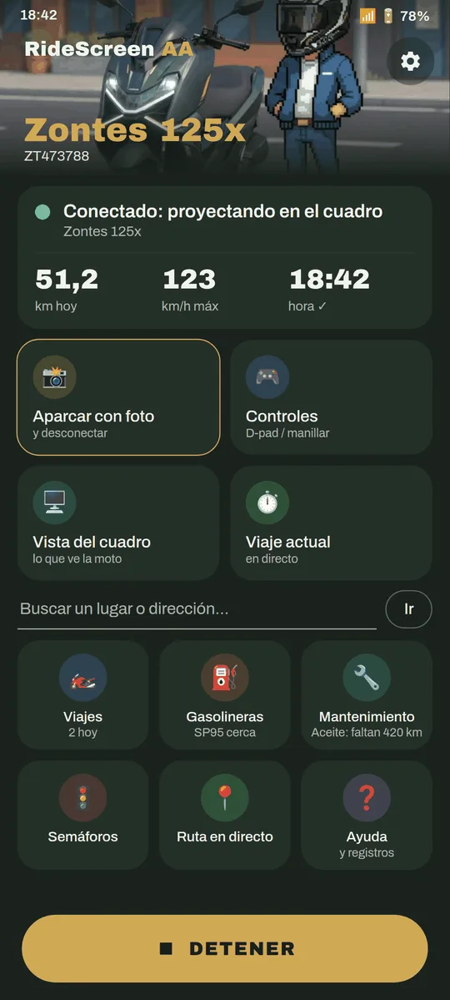
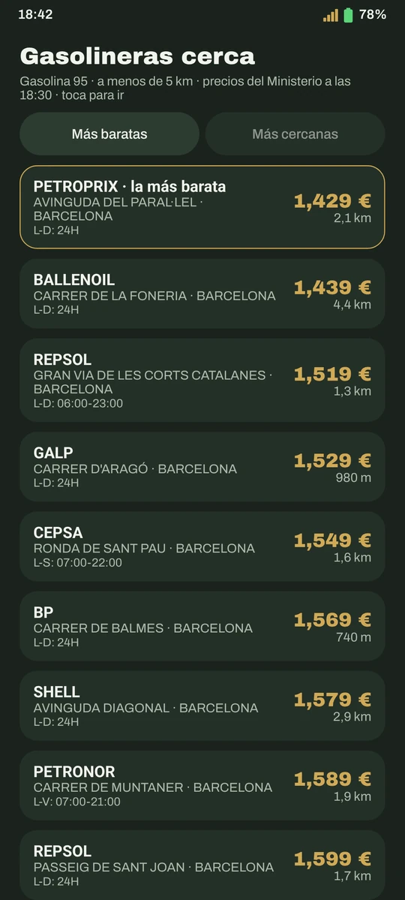
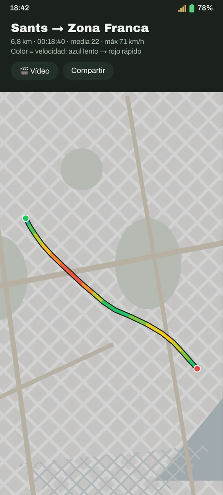
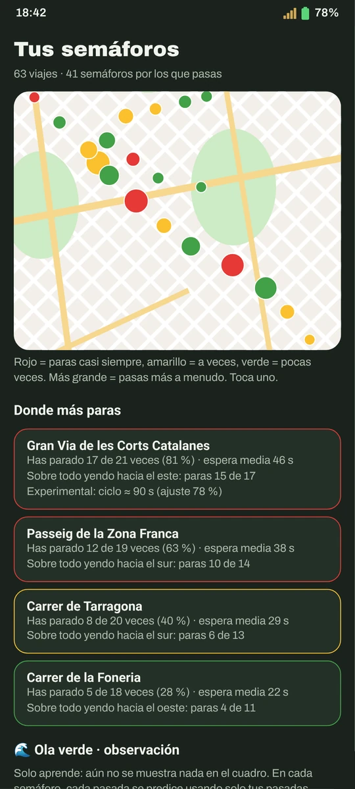
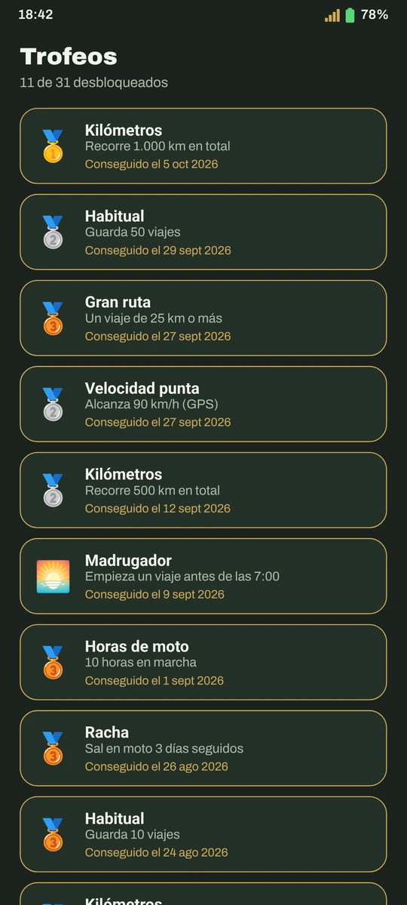
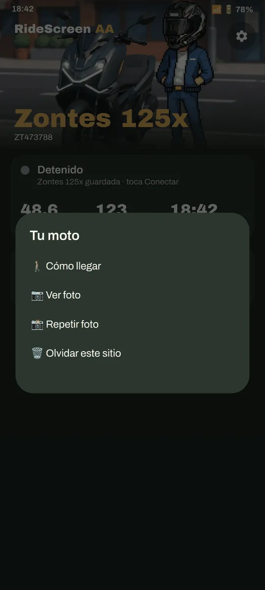
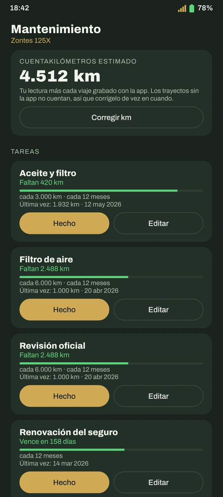
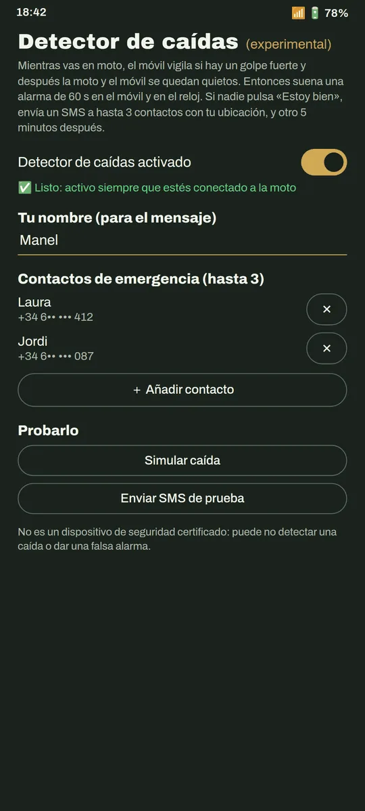
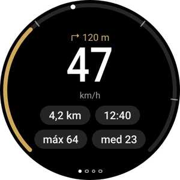
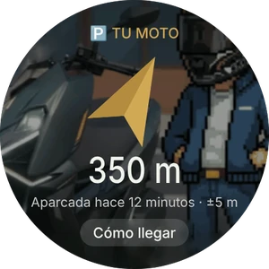

Android Auto en el cuadro de tu moto, sin cables
Google Maps, Waze, Spotify y el Asistente en la pantalla de la moto, conectando solo al arrancar. Y además: gasolineras más baratas, tus viajes con récords, vídeos con la velocidad encima y app para el reloj.
Gratis · sin anuncios · de código abierto · Android 10 o superior
Descarga directa de la última versión · también en GitHub · novedades de la v2.3


¿Funciona con mi moto?
Si tu cuadro muestra un código QR para conectar el móvil (MotoPlay / EasyConnect), casi seguro que sí. La app se prueba a diario en una Zontes 125X; parte de OpenCfMoto, que funciona con muchas marcas que usan el mismo cuadro.


Mucho más que Android Auto
Conecta sola
Arrancas la moto y Android Auto aparece en el cuadro, con el móvil en el bolsillo.
Imagen a medida
Ajusta la imagen al cuadro con flechas, viendo el resultado en directo en la moto.
«Ok Google»
Habla con el Asistente desde el intercomunicador, el reloj o las gafas.
Gasolineras más baratas
Precio oficial de la gasolina 95 cerca de ti, y Maps te lleva. Solo en España.
Tus viajes
Cada salida se guarda sola: ruta por velocidad, mapa de calor, récords y trofeos.
Vídeo del viaje
Junta tus clips (Ray-Ban Meta, cámara, móvil) con mapa, velocidad y hora encima.
Tus semáforos
Dónde paras más, cuánto esperas y qué camino es de verdad más rápido.
Dónde aparqué
Guarda el sitio y una foto; la brújula del reloj te lleva hasta la moto.
Mantenimiento
Aceite, correa, ITV… con aviso cuando toca, y tu consumo real.
Detector de caídas
Alarma en el móvil y el reloj y, si no respondes, SMS con tu ubicación.
ExperimentalLa batería de tu moto
Voltaje y si está bloqueada, leídos de la caja keyless. Solo lectura: nunca envía órdenes.
Nuevo en 2.3Widget «Conectar»
Un toque en la pantalla de inicio y conecta con tu moto, con la foto de tu Garaje.
Nuevo en 2.3Modo pasajero
Tu acompañante elige destino y música y mueve Android Auto desde su móvil.
Nuevo en 2.3Viajes a salvo
El viaje se guarda cada 30 s aunque la app se cierre. Y puedes importar rutas GPX.
Nuevo en 2.3Así se ve








Ajuste de la imagen, en directo en el cuadro


App para relojes Wear OS · guía del reloj
Listo en 10 minutos
Descarga el APK
Con el botón de arriba, directo (o desde GitHub). Las siguientes versiones te las ofrece la propia app.
Prepara Android Auto
Un ajuste de una sola vez en Android Auto. La guía te lo enseña con capturas.
Escanea el QR del cuadro
Y pulsa Conectar. A partir de ahí, conecta sola al arrancar la moto.
Preguntas frecuentes
¿Es una app oficial de Zontes?
No. Es un proyecto independiente, hecho por un motero para su Zontes y compartido con la comunidad. No está afiliado con Zontes, CFMoto, Carbit ni Google.
¿Cuánto cuesta?
Nada. Es gratis, sin anuncios ni suscripciones, y el código es abierto (licencia AGPL-3.0). Si te resulta útil, puedes invitarme a un café.
¿Por qué no está en Google Play?
Está en camino. Mientras tanto se descarga desde esta web; si Play Protect avisa, es porque aún no conoce la app: Más detalles → Instalar de todas formas.
¿Qué pasa con mis datos?
Tus viajes, fotos y ajustes se quedan en tu móvil: no hay cuentas ni nube. La app solo envía informes anónimos de errores (sin nada que te identifique) para poder arreglarlos.
¿Necesito datos móviles?
Para los mapas, la música en streaming y las gasolineras, sí, igual que con Android Auto en el coche. La conexión con la moto es por su propio Wi‑Fi.
Algo no funciona, ¿qué hago?
Mira la guía, que tiene los errores más habituales. Si sigue, en la app: ❓ Ayuda → Compartir registros, y envíalo contando qué ha pasado.